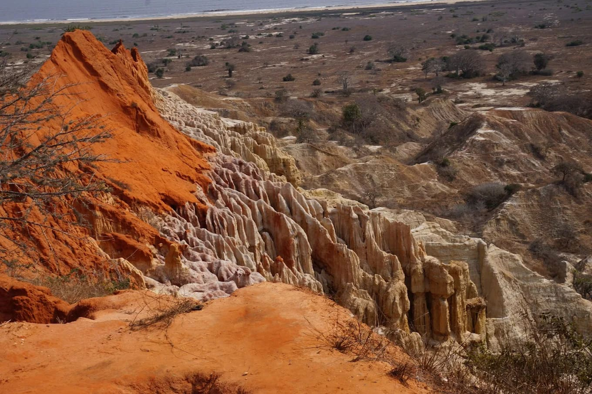

Miradouro da Lua
Just a short drive from Luanda, the Miradouro da Lua offers one of Angola’s most breathtaking landscapes. Carved by wind and rain over centuries, its moon-like cliffs and deep ravines create a surreal, otherworldly view. This natural wonder is especially stunning at sunset, when the rocks glow with warm, golden hues. A perfect spot for photography, relaxation, or quiet contemplation.
